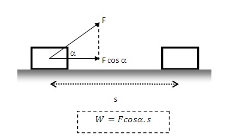
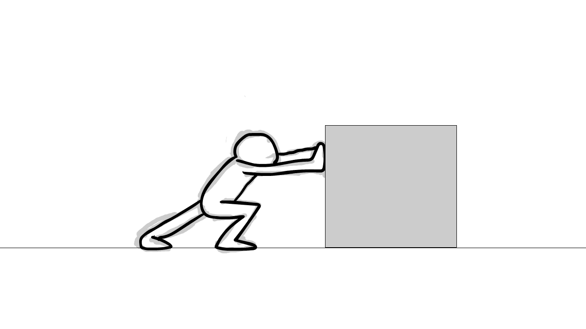

Artikel ini membahas tentang materi mengenai usaha serta contoh-contoh
fenomena setiap hari
Usaha memiliki arti segala kegiatan yang dilakukan untuk mencapai tujuan tertentu. Misalnya, usaha yang kamu buat untuk mempertahankan nilai ujian kalian. Atau usaha untuk mendapatkan hasil yang sangat memuaskan. Atau bahkan kamu berpikir memiliki impian ingin membuaka usaha dibidang tertentu. Yups, memang benar pengertian dari “usaha” yang kamu pikirkan itu. Apapun “usaha”nya, meskipun namanya sama-sama “usaha”, pengertian “usaha” dalam dinia fisika berbeda dengan apa yang kamu kira seperti contoh diatas.
Jadi apa itu pengertian usaha dalam fisika...? mari kita simak
Dalam ilmu fisika “usaha” adalah besarnya gaya yang diberikan untuk memindahkan atau menggerakkan suatu benda atau objek. Benda berpindah posisi atau bergerak dari posisi semua ke posisi akhir karena pengaruh adanya gaya setelah dilakukan usaha. Sehingga secara matematis seberapa besar usaha yang dilakukan dapat dituliskan dengan persamaan berikut:
Dimana,
F = Gaya (Newton)
W = Usaha (Joule) dan
s = Perpindahan (m)
Apabila Usaha (W) searah dengan perpindahan benda, maka Usaha akan bernilai positif (+)
Namun apabila Usaha (W) berlawanan arah dengan perpindahan, maka usaha akan bertanda negatif (-).
Gaya yang bekerja membuat sudut (α) terhadap perpindahan, maka gaya
akan membentuk sudut tertentu. Oleh karena itu dapat digunakan
persamaan

Dimana, α = sudut yang dibentuk oleh gaya
Besar usaha jika arah gaya yang bekerja berlawanan dengan arah perpindahan, maka usaha tersebut bernilai negatif(-).
•Buah mangga yang jatuh dari pohon karena pengaruh gaya dari gravitasi bumi sehingga buah mangga terjatuh di bawah
•Saat kita di Supermarket untuk berbelanja maka trolly yang kita gunakan merupakan bentuk usaha yang dilakukan pada bidang datar
•Saat kita mendorong meja dan meja berpindah posisi dari posisi awal ke posisi terakhir
•dan lain-lain
Pria yang melakukan usaha adalah pria yang melakukan usaha ketika mengangkat kotak box pertama kali hingga setinggi dada
Dan pria yang tidak melakukan usaha adalah pria yang saat berjalan sambil membawa kotak bunga
